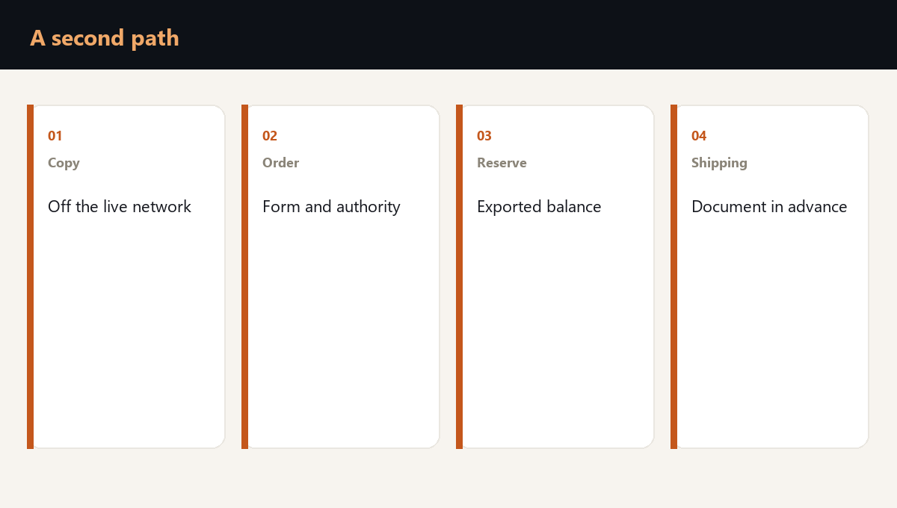

After ransomware, a company often finds that it did have a second copy. And that the attack closed it together with the first: the same network, the same password, the same folder on the same server.
A second way of working is built differently. It is not another copy sitting next door. It is the ability to take an order, see the stock and release a vehicle somewhere this attack does not reach. In the published logistics account, a day without that ability cost about 180,000 rubles. A second path earns its place when it saves that day, rather than creating a second folder.

What is actually prepared in advance
What is prepared is not the whole company at once, but a single shipping day. Three things without which a vehicle does not leave: a list of what may be released, a rule for who is delivered to first, and the name of the person who signs the shipment without the system.
The list is exported in advance and kept where ransomware cannot read it. That means another site, another access, or paper. The carrier contact and the contacts of the key customers sit there too. Otherwise the day of the attack has a copy of the database and no phone number by which a vehicle leaves.
- The stock. An export of what the store can ship without a screen.
- The order. Who was promised a delivery for the coming days, on a medium the attack does not encrypt.
- The signature. Who is allowed to release a vehicle while the ledger is closed.
Where a manual shipment stops being a way out
Commodity goods that people recognise on sight can be shipped this way, and only in the quantity the export confirms. A unique kit whose price only the CRM knows is better not promised by hand: a wrong address or a wrong kit costs more than a pause.
Packaging for that quantity is held physically, not only as a line in the system. No carton on the site, no shipment, even if the list is intact.
How this is looked at for your company
The ransomware readiness check looks at where the attack does not reach, what quantity of commodity goods people can ship by hand, and who signs that shipment.
A second copy on the same network is not a second way. A second way begins where the order, the stock and the signature survive the closing of the database.
Frequently asked questions
A copy keeps the data. A second way lets you ship the order while the data is not in the system. It sits where this attack does not reach.
Goods whose kit, price and address exist only in the CRM. Commodity goods can be promised from a list exported in advance, within that list.
Where ransomware cannot read it: another access, another site, or paper. A folder on the same server closes together with the database.
Is your team ready for the first hour of a crisis?
You test a plan by running a scenario. Reading it is not enough. The assessment shows the gaps, and the corporate format works through them with your team on your own processes.